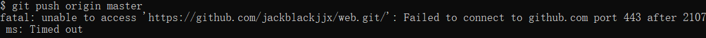
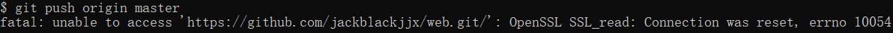

More
git提交、上传项目到github
在git bash里面进行用户名和邮箱设置git config --global user.name "用户名" (回车)
git config --global user.email "输入邮箱" (回车)
cmd命令配置ssl证书
$ ssh-keygen -t rsa -C "邮箱"
在本地生成rsa证书后，打开 id_rsa.pub，复制里面的全部内容
回到 github 进入 Account => Settings-选择 SSH and GPG keys-点击 New SSH key-粘贴生成的代码
官方文档
1.HTTPS:
Git clone https://github.com/你的项目仓库.git
添加你想要上传的文件到克隆的项目里
git init (记得初始化)
git add .
git commit -m "newfiles"
git push origin master
2.SSH:
git init (记得初始化)
git add .
git commit -m "newfiles"
git remote add origin git@github.com:jackblackjjx/web.git
git push origin master
git 远程删除文件
1. 仅仅删除远程分支文件，不删除本地文件删除远程文件 filename
git rm --cached filename (强制加 -r)
git commit -m "delete filename"
git push origin master(此处是当前分支的名字)
删除远程文件夹directoryname
git rm -r --cached directoryname
git commit -m "delete directoryname "
git push -u origin master(此处是当前分支的名字)
2. 删除本地文件与远程分支文件 删除文件filename
git rm filename
git commit -m "delete file filename "
git push -u origin master(此处是当前分支的名字)
删除文件夹directoryname
git rm -r directoryname
git commit -m "delete directory
directoryname "
git push -u origin master(此处是当前分支的名字)
 可能是当前网络没有办法访问github，建议科学上网，挂代理，如果还不行，那就换别的方法
OpenSSL SSL_read: Connection was reset, errno 10054
建议重新执行2.ssh那几行